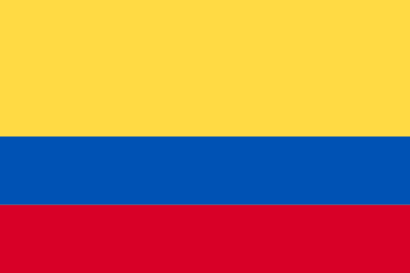
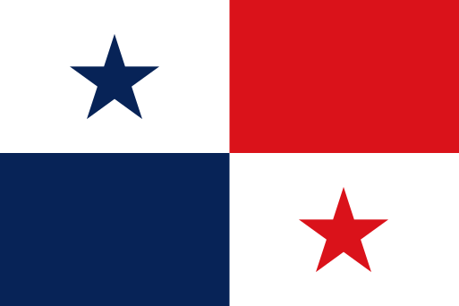

Confini tra continenti: dove si incontrano Europa, Asia, Africa e America
Sulla mappa ci sono 13 confini terrestri che uniscono paesi assegnati a continenti diversi: sono le linee bianche tratteggiate.
Il confine tra i continenti è in parte una convenzione. In questa mappa ogni paese è assegnato a un solo continente: la Russia all'Europa (anche se gran parte del suo territorio è in Asia), la Turchia all'Asia, Cipro all'Europa, l'Egitto all'Africa, i paesi dell'America centrale e dei Caraibi al Nord America. Per questo, per esempio, il confine tra Russia e Cina compare come confine tra Europa e Asia, mentre quello tra Panama e Colombia segna il passaggio tra Nord e Sud America.
| Paese | Continente | Paese | Continente |
|---|---|---|---|
| Asia | Europa | ||
| Europa | Asia | ||
| Cina | Asia | Europa | |
| Asia | Europa | ||
| Georgia | Asia | Europa | |
| Grecia | Europa | Asia | |
| Asia | Europa | ||
| Asia | Europa | ||
| Spagna | Europa | Africa | |
| Africa | Israele | Asia | |
| Africa | Asia | ||
| Asia | Oceania | ||
 Colombia | Sud America |  Panama | Nord e Centro America |